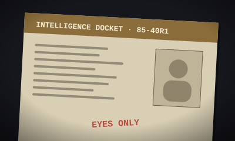

TOP SECRET · E.O. 11652
FORENSIC INSPECTION
DOD_SEC_OK
DOCKET: WDC-20007
PASS: 99.98%

CLASSIFIED ARCHIVE · HASH CHECKED
CASE: 85-40R1
EYES ONLY
SHA-256: e82f...a17b
TAMPER: 0.00%
LAND REGISTRY · DEED VERIFIED
DOCKET #B-88391
NOTARIAL WAX
RECORD: 1883 CLERK
AUTHENTICATED: 100%
BIOMETRIC ID · PASS: 99.94%
NO. FD 749011C
BIOMETRIC
ID: E. VANCE
GUILLOCHE: VALID
Cryptographic Forensic Gateway
PRAMANIK
Zero-Assumption Forensic Verification Infrastructure for Government, Judicial, and Institutional Scans.
Pramanik protocol doctrine • source of truth
Pramanik is a document-authentication and fraud-detection system that connects available government verification sources through authorised APIs or official verification services.
It accepts physical scans and digital files, verifies issuer records where available, validates QR codes and digital signatures, compares document fields, detects possible tampering and creates an auditable report for human review. The issuing department is the source of truth. Pramanik never decides whether a certificate is genuine on its own; it asks the department that issued it.